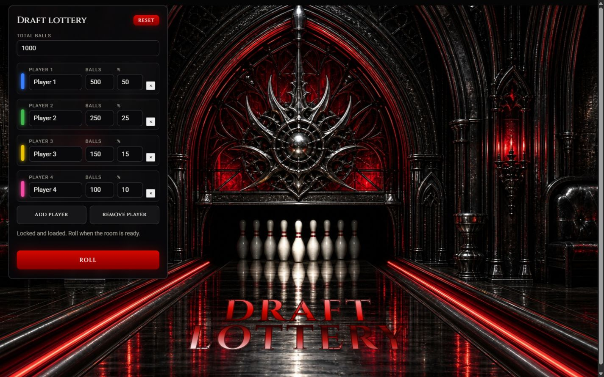
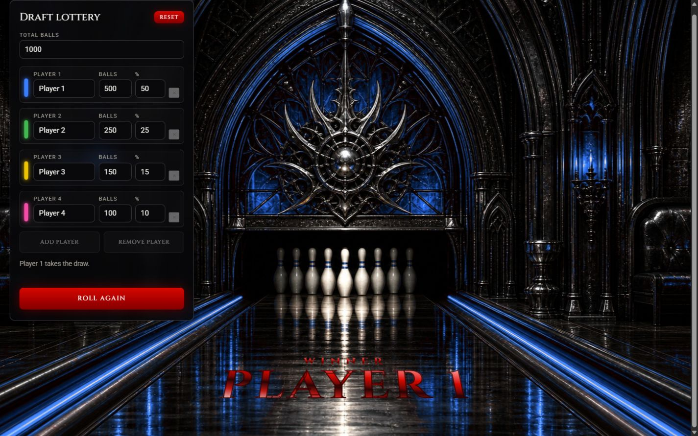

Problem
Drafts often need a weighted draw before the night begins: one participant may own half the chances while another owns ten percent. A spreadsheet or random-number generator can make the selection, but it gives the room nothing to watch. Generic wheel spinners create more drama, yet their animation can look like the thing deciding the result.
The design challenge was to make the draw feel ceremonial without compromising trust. The result needed to accept real draft allocations, reject an invalid setup clearly, choose exactly one winner fairly, and turn that preselected result into a reveal that works on a television or a phone.
Role
I designed and built the product end to end: draw model, validation rules, interaction flow, visual system, responsive layouts, canvas colour treatment, motion and accessible controls. Visual exploration was AI-assisted; the product decisions, implementation and final art direction were mine.
Process
- Make the odds concrete Each player's allocation is stored as an integer number of balls. The interface shows both balls and percentage, keeps them synchronized, and refuses to run unless every player has a name, every allocation is positive and the allocated balls equal the declared total.
- Choose the winner before the show The draw uses crypto.getRandomValues to select one ticket across the complete allocation. Rejection sampling removes modulo bias. The animation never feeds the random choice, so frame rate, device speed and motion settings cannot change who wins.
- Separate setup from reveal The compact control panel handles two to ten players. Once Roll is pressed, inputs lock, the hall cycles through the participant colours, and the selected player's colour and name take over the floor. Roll again preserves the setup for another independent draw.
- Use the room as the interface Instead of placing the result in a modal, the whole bowling hall becomes the feedback surface. A canvas layer recolours the crimson architectural light without replacing the base artwork, while the winner's name is projected into the lane perspective.
- Design for the couch and the phone Desktop keeps the setup panel beside the full-stage composition for a group reveal. Below the mobile breakpoint, the controls become a compact sheet and the winner state prioritizes the name and repeat actions. Reduced-motion users skip the colour cycle and receive the result immediately.
UI system
The visual language extends the black-chrome and crimson atmosphere of the Steel Lanes artwork into a functional product. The setup panel stays neutral and quiet; saturated colour belongs to participant identity and the winner reveal.
Type: Cinzel for the ceremony and Roboto for fast input scanning. Eight-pixel controls, narrow uppercase labels and a single crimson action hierarchy keep the functional layer separate from the theatrical floor.
Screens
Captured from the live product at 1440 × 900.


Decisions worth defending
- This is a single-winner weighted lottery, not a combination-based draft-order system. Naming the scope plainly keeps the interaction understandable and the probability model auditable.
- The visual mix is theatre; integer tickets are the source of truth. That boundary is documented in the code and visible in the flow, where the choice occurs before the colour cycle begins.
- There is no account, backend or saved personal data. The tool is intentionally a static page that can be opened on draft night, configured in seconds and run locally in the browser.
- The artwork is a stage, not a skin over standard controls. Form labels, status messages, disabled states and native inputs remain legible and keyboard-operable even when the cinematic layer is absent.
Tech stack
- Vite
- HTML5
- CSS custom properties
- Vanilla JavaScript
- Canvas 2D
- Web Crypto API
- Responsive CSS
- prefers-reduced-motion
- Cinzel + Roboto
Live product
The working draw is last on purpose. Read the work first, then open the hall.
Open the draft lottery